Individual academic project
I conducted the research, selected and developed the concept, designed the interaction and product architecture, built the CAD and study prototypes, and produced the CMF, visualizations, and film.
Hero Project 02 / Human-centred Product System Design / Melody Adventurer
Melody Adventurer / Musical Construction Game
A modular physical–digital product system that translates user research into configurable interaction, prototype-led iteration, and a calm CMF direction for children aged 6–10.
Ownership & Current Status
I conducted the research, selected and developed the concept, designed the interaction and product architecture, built the CAD and study prototypes, and produced the CMF, visualizations, and film.
Study models verified the rolling path and basic key activation; benchmarking and kinematic simulation informed the next iteration.
Next: engineer audio recognition, tune acoustics, validate production materials, and test comprehension, setup, and replay with children and educators.
01 / Context & Design Question
The project explores an alternative to highly immediate digital feedback: an activity where children first construct, predict, and adjust before receiving a musical and narrative reward.
The project translates research on motivation, manageable challenge, and error recovery into a physical interaction; it does not claim measured behavioural or clinical outcomes.

02 / Research to Design Criteria
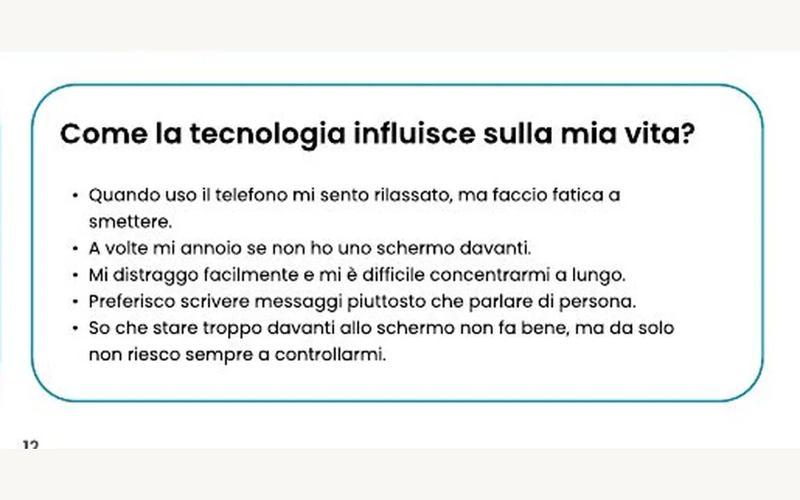
One qualitative interview suggested that screen use could feel relaxing yet difficult to stop, while longer concentration felt harder to sustain.
Design implication → Make progress visible without continuous stimulation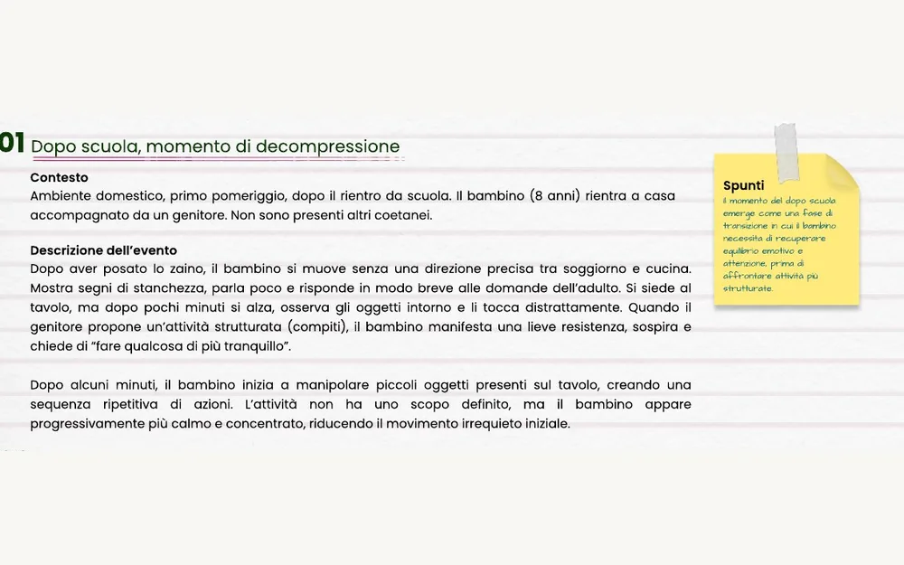
In one after-school session, initial restlessness eased as the child began arranging small tabletop objects into a repeated sequence.
Interaction implication → Make hands-on sequencing the core action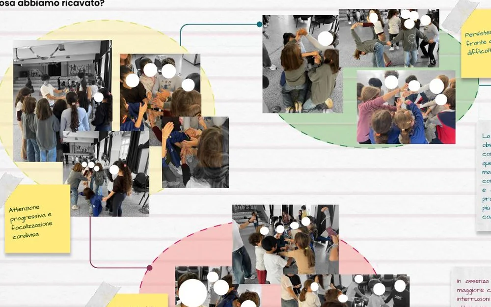
A common goal and adaptable rules supported attention and negotiation; greater complexity disrupted the action sequence.
System implication → Keep rules legible and difficulty adjustableScope note: this was a small qualitative study used to direct concept development, not to claim behavioural or clinical outcomes.
03 / From Concept Selection to Product Direction
Decision 01 / Interaction Direction
Three parallel directions were compared—not presented as chronological iterations.
Selection priorities
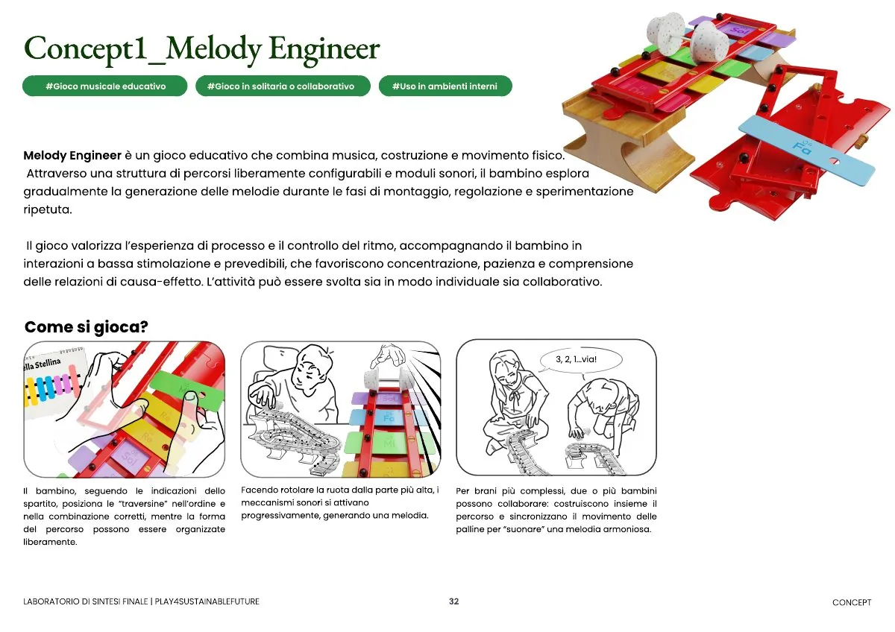
Music, construction, and movement created a multisensory, configurable play system.
Why it advanced Delayed musical reward, flexible paths, and solo or collaborative play gave it the strongest combination of research fit, replay, and development potential.
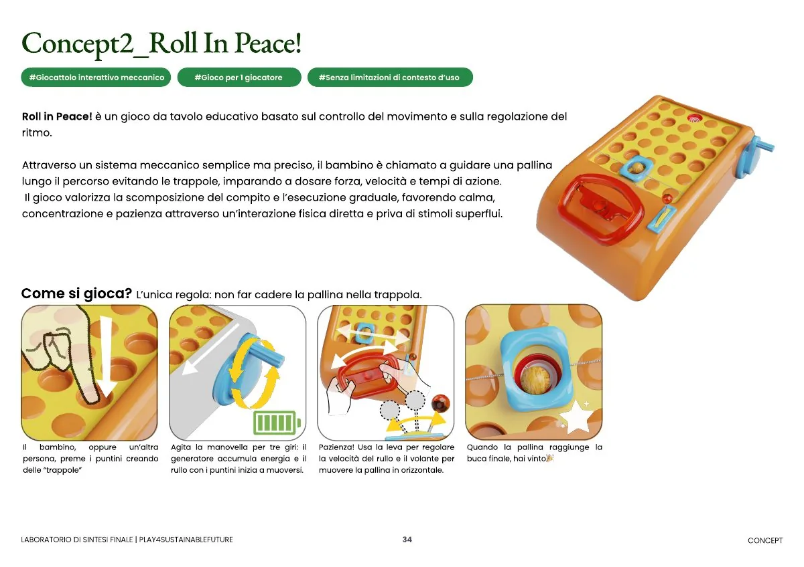
Strength Immediate rolling-ball cause and effect.
Not selected → Its fixed board limited configuration and replay.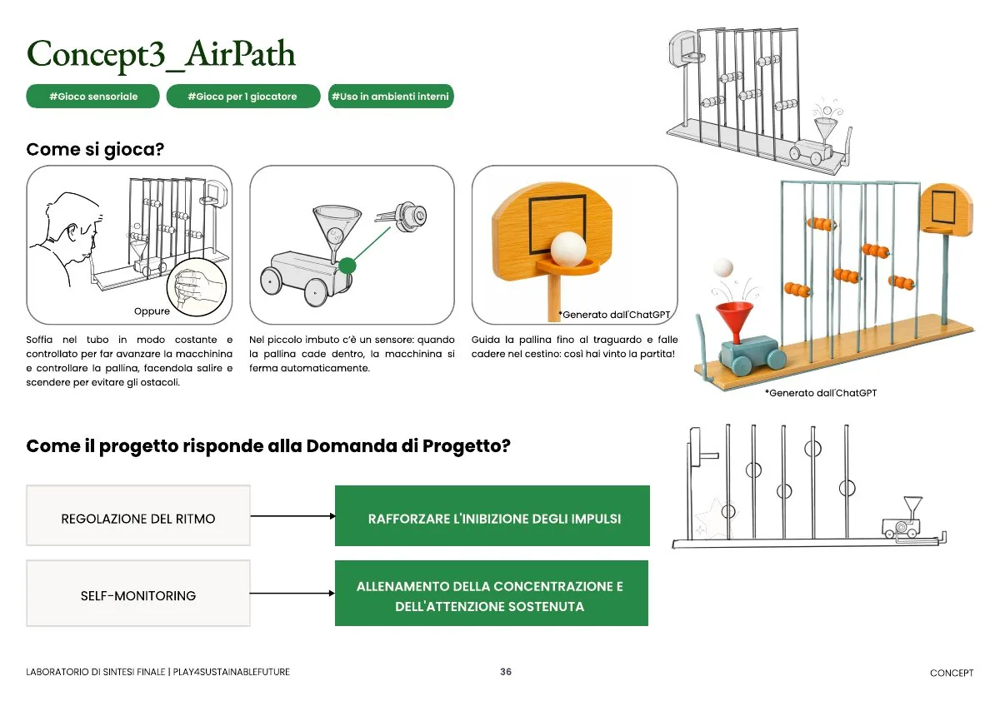
Strength Focused, embodied breath control.
Not selected → It offered less construction, replay, and collaborative potential.Decision 02 / Architecture & Form
Three system proposals exposed different usability and hierarchy risks.
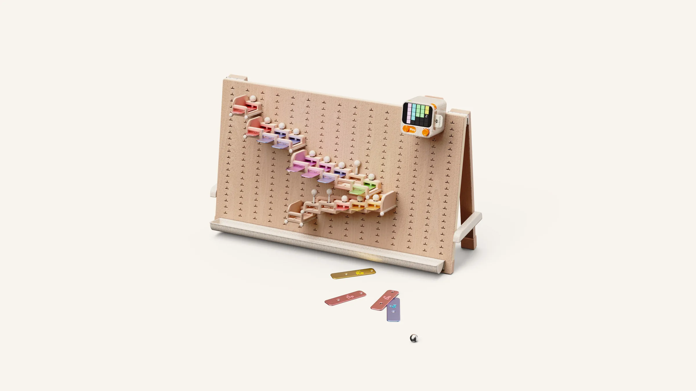
Selected because The physical path remains primary, while the smaller module clearly supports story, score, and the next action.
Project boundary The physical product system was resolved as a design concept; final electronics remain a proposed architecture.
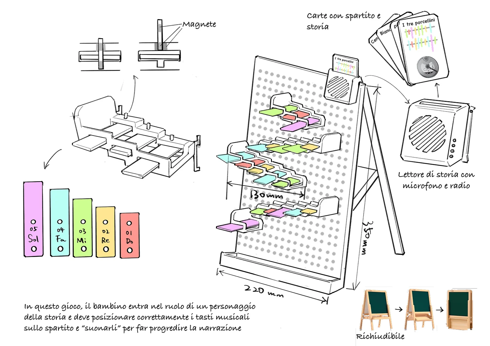
Risk identified It split the information hierarchy and left system feasibility unresolved.
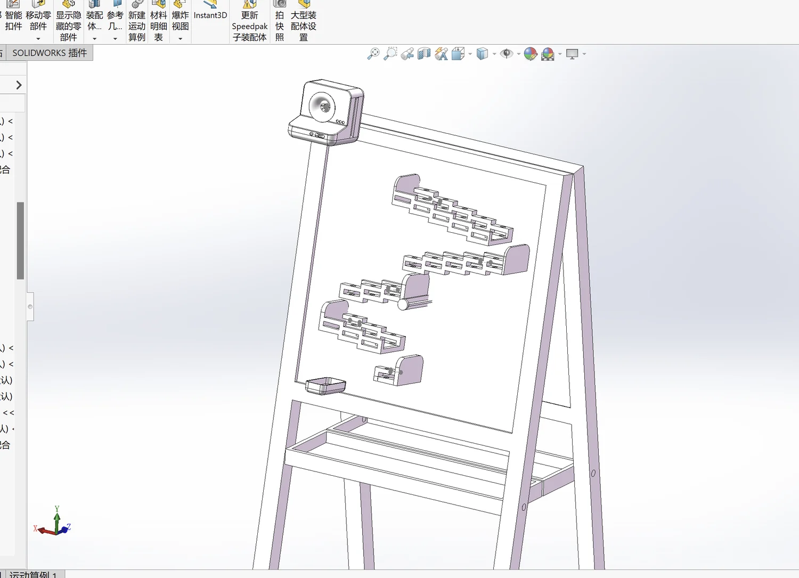
Risk identified Its footprint and elevated interaction area conflicted with seated tabletop play.
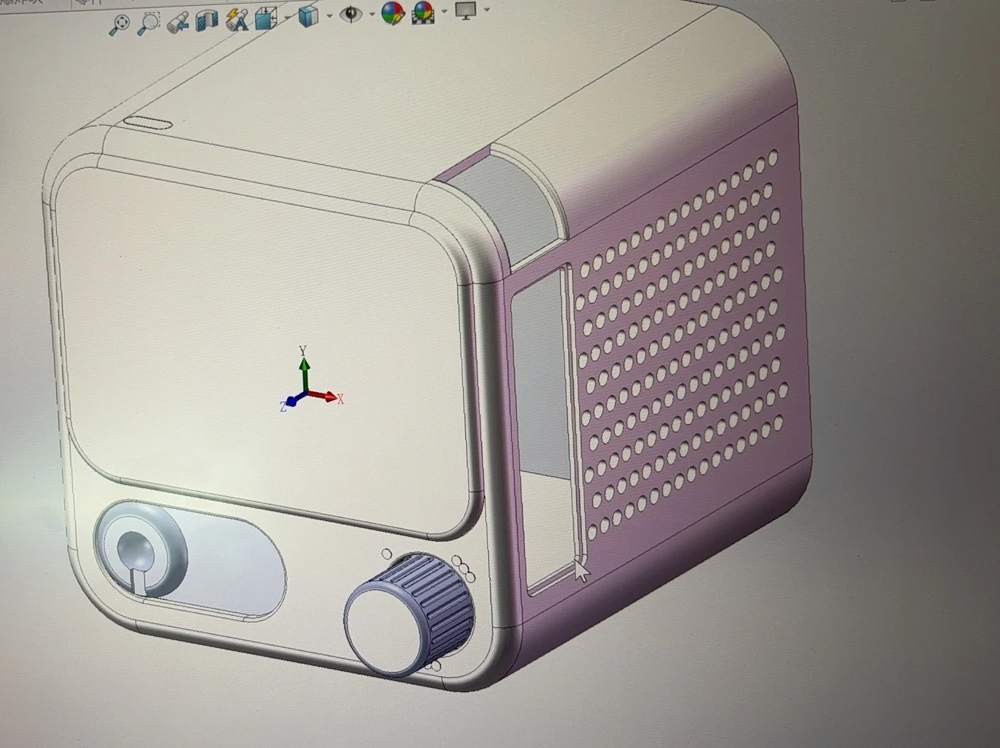
Risk identified Its visual volume competed with the child-built physical path.
04 / Interaction Logic
Insert a narrative card and listen until the story pauses.
The module displays the musical pattern to recreate.
Configure tracks and place colour-coded musical keys.
The ball strikes the keys and plays the sequence.
A correct melody advances the story; errors invite adjustment.
05 / Product System
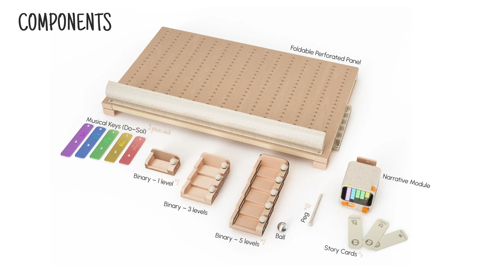
System Architecture
The foldable perforated panel accepts one-, three-, and five-level tracks. Colour- and length-coded keys map notes from Do to Sol, while the detachable narrative module manages the story, score, and play states.
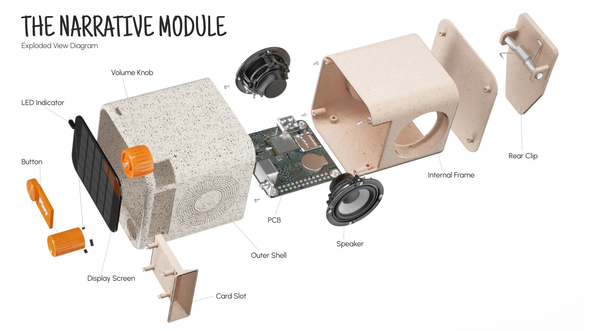
Narrative Module
A proposed NFC story-card workflow and note-recognition PCB compare the played sequence with the stored score. The module can also detach for listening mode.
Concept architecture — electronics not yet engineered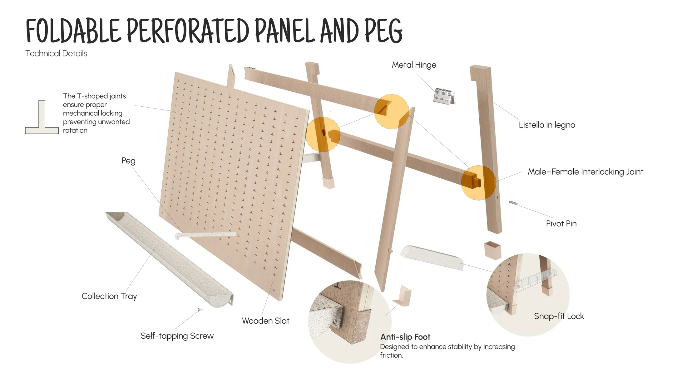
Physical Platform
The perforation matrix, magnetic modules, collection tray, and foldable support were designed to simplify setup, error correction, transport, and storage.
Preliminary construction proposal06 / Ergonomics & CMF
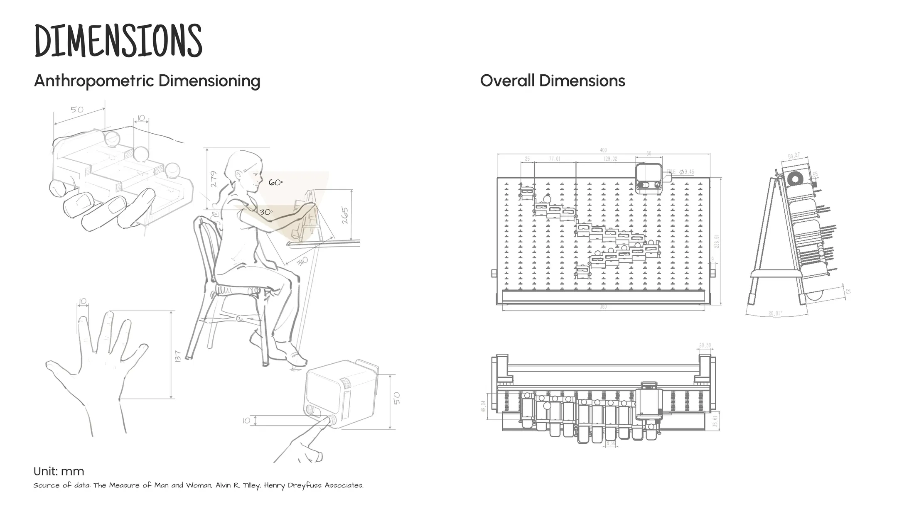
Anthropometric Reference / Ages 7–10
For the broader 6–10 target, preliminary sizing used available 7–10-year-old data. An 8-year-old 95th-percentile reference limited the active area to 310 mm high × 462.5 mm wide; a 7.5–8.5-year-old grip reference limited track width to 91 mm.
Fit and reach for six-year-old users still require testing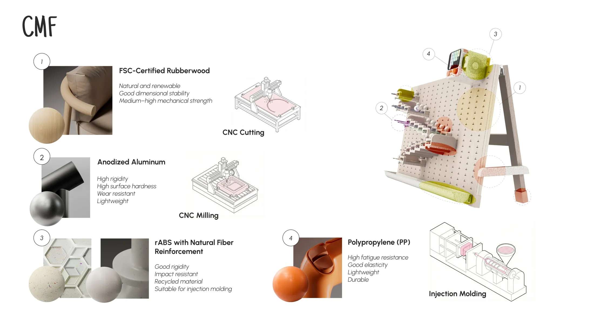
CMF Direction
Warm wood and lightly textured matte parts reduce visual noise; vivid keys remain functional note identifiers. Proposed materials include FSC-certified rubberwood, fibre-reinforced ABS, PP, and anodized aluminium.
Material and manufacturing choices remain preliminary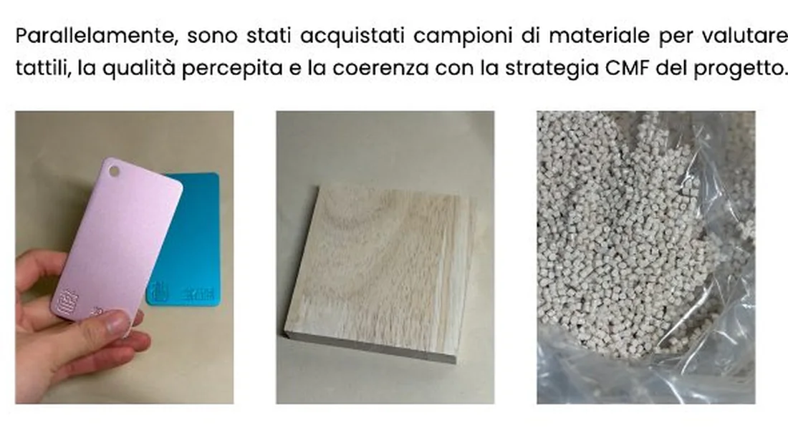
CMF Material Evidence
I purchased and compared anodized-metal colour chips, a light wood sample, and fibre-reinforced polymer pellets to assess tactility, perceived quality, and coherence with the calm domestic direction.
Sample-level evaluation—production materials and finishes remain proposed.
07 / Prototype & Validation
Prototype-led Iteration
The study verified sequential ball travel and basic key activation. Compared with a commercial xylophone, the first keys sounded muffled; this led to a proposed architecture with stiffer keys, elastic supports, and a resonance cavity.
The physical model confirmed sequential ball movement across the stepped route. A SolidWorks motion study checked travel to the collection tray without interference.
The first keys sounded quieter and less bright than the commercial reference. Greater key stiffness, elastic supports, and a resonance cavity informed the next architecture.
Acoustic tuning, note-recognition electronics, production durability, and comprehension, setup, and replay behaviour with children still require testing.
08 / Final Concept
Product Introduction Film
The film brings product architecture, play sequence, interaction modes, and CMF into one concise final presentation.
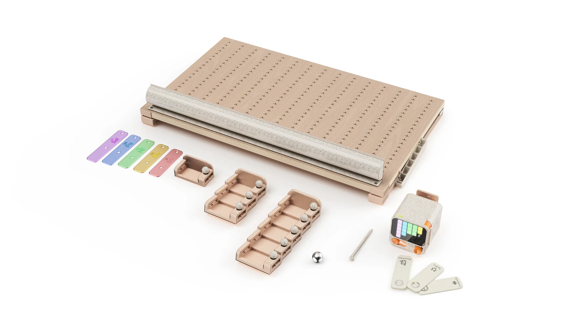
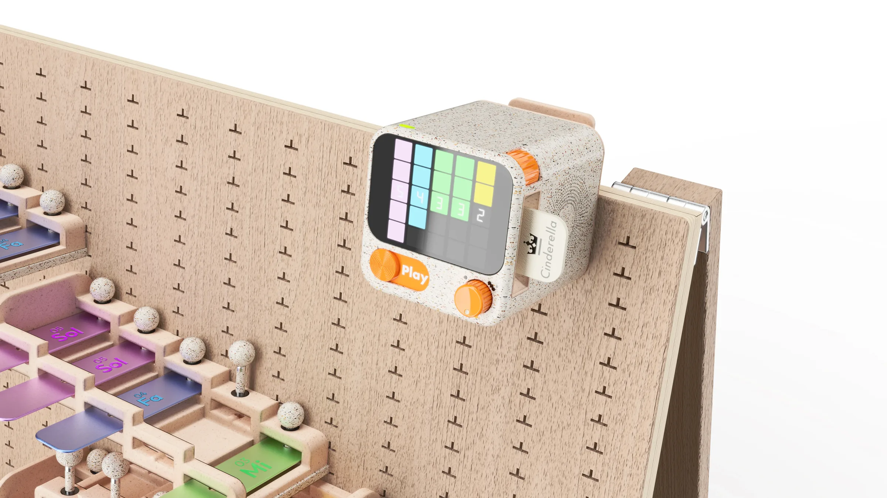